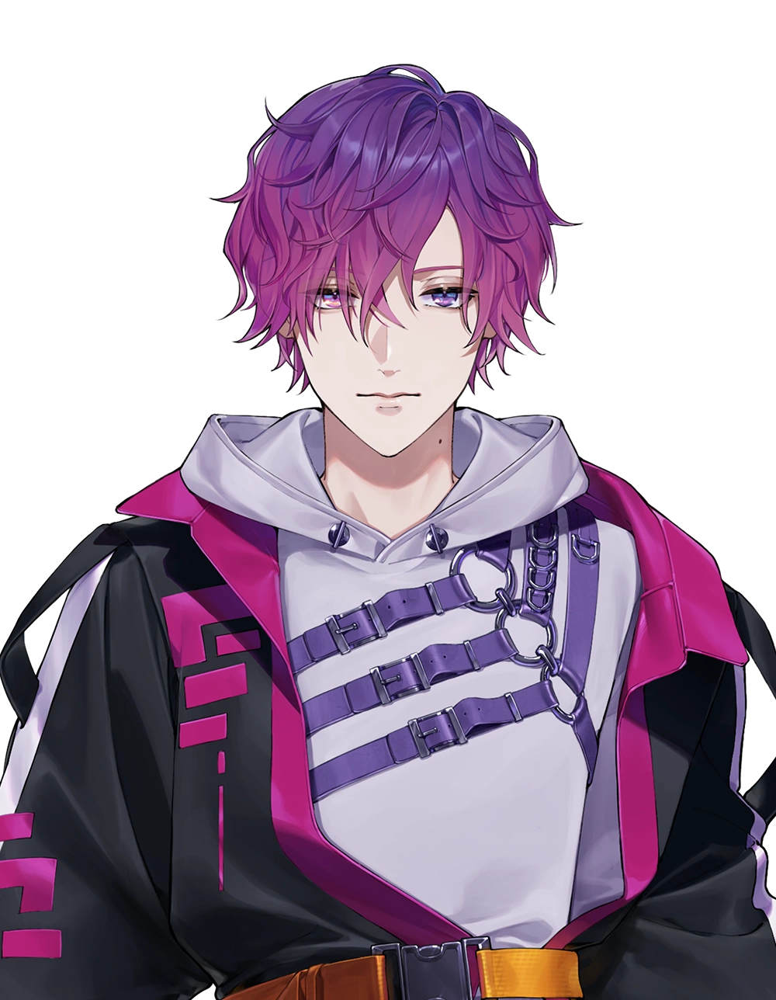

Background 2021
On 18 June 2021, NIJISANJI EN opened two sets of auditions, one of which was specifically for male Livers. The male-specific auditions lasted until 1 August.
|  | |
| Info | |
| Nijisanji EN's 5th Wave Noctyx Member | |
| Name: | Uki Violeta |
| Group Members: | Fulgur Ovid, Uki Violeta, Sonny Brisko, Alban Knox, Yugo Asuma |
| Gender: | Male |
| Birthday: | 17 July |
Uki Violeta (浮奇ヴィオレタ) is a male English Virtual YouTuber affiliated with NIJISANJI EN's fifth wave "Noctyx", alongside Sonny Brisko, Alban Knox, Fulgur Ovid, and Yugo Asuma.
A Psychic from the future with enigmatic powers. Though he appears somewhat shy, strange things follow wherever he goes.
Uki's fans are called Stargazers. Uki's YouTube membership is called Ukiverse.
On 18 June 2021, NIJISANJI EN opened two sets of auditions, one of which was specifically for male Livers. The male-specific auditions lasted until 1 August.
On 22 February 2022, NIJISANJI EN announced the upcoming debut of its fifth wave, "Noctyx",
accompanied by a teaser featuring the new Livers' designs and voices.
Uki's YouTube channel was created on 7 February 2022, and his Twitter account also created
in the same month. His first tweet was made on 22 February 2021.
Noctyx made their debuts on 27 February 2022 (JST) as part of a special debut program hosted
on the NIJISANJI EN channel, with commentary provided by Reimu Endou and Ike Eveland. Uki
was the second of the group to debut. His debut stream was notable for featuring his first
solo original song, "Deja Vu." Afterwards, all five members of Noctyx appeared on the main
channel.
An original song sung by Noctyx, "Stuck in The Abyss", was released shortly after the
program. The lyrics and music were by MATZ and BBY NABE, and the song was produced by the
former.
On 12 March, Uki opened memberships on his YouTube channel.[5] He also reached 100,000
subscribers on his YouTube channel the same day.
On 22 April, Uki's Sakura Bloom 2022 voice pack and goods went up for sale.[7] His Japanese
voice went up for sale later on 3 May.
On 2 May, Uki reached 200,000 subscribers on his YouTube channel.
On 27 May, Uki reached 250,000 subscribers on his YouTube channel.
On 21 June, Uki reached 300,000 subscribers on his YouTube channel.
On 6 July, Uki reached 500,000 followers on his Twitter account.
On 7 August, Uki reached 400,000 subscribers on his YouTube channel.
On 4 July, Uki's "Deja Vu" single was made available for streaming via TuneCore. This was
Uki's first single to be digitally distributed and sold through online retailers.